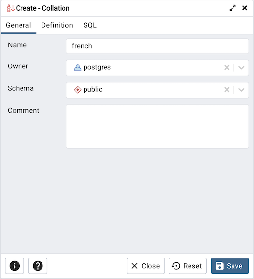
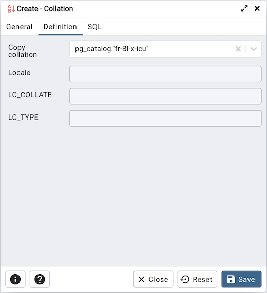
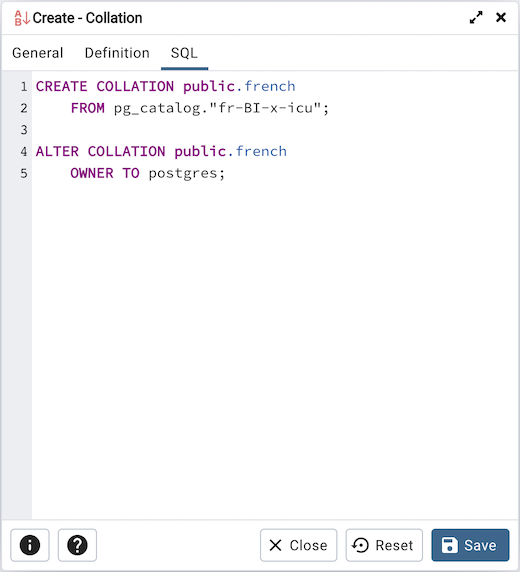

Collation Dialog¶
Use the Collation dialog to define a collation. A collation is an SQL schema object that maps a SQL name to operating system locales. To create a collation, you must have a CREATE privilege on the destination schema.
The Collation dialog organizes the development of a collation through the following dialog tabs: General and Definition. The SQL tab displays the SQL code generated by dialog selections.
Use the fields in the General tab to identify the collation:
Use the Name field to provide a name for the collation. The collation name must be unique within a schema. The name will be displayed in the pgAdmin tree control.
Select the name of the owner from the drop-down listbox in the Owner field.
Select the name of the schema in which the collation will reside from the drop-down listbox in the Schema field.
Store notes about the collation in the Comment field.
Click the Definition tab to continue.
Use the fields in the Definition tab to specify the operating system locale settings:
Use the drop-down listbox next to Copy collation to select the name of an existing collation to copy. The new collation will have the same properties as the existing one, but will be an independent object. If you choose to copy an existing collation, you cannot modify the collation properties displayed on this tab.
Use the Locale field to specify a locale; a locale specifies language and language formatting characteristics. If you specify this, you cannot specify either of the following parameters. To view a list of locales supported by your Linux system use the command locale -a.
Use the LC_COLLATE field to specify a locale with specified string sort order. The locale must be applicable to the current database encoding. (See CREATE DATABASE for details.)
Use the LC_CTYPE field to specify a locale with specified character classification. The locale must be applicable to the current database encoding. (See CREATE DATABASE for details.)
Click the SQL tab to continue.
Your entries in the Collation dialog generate a SQL command (see an example b elow). Use the SQL tab for review; revisit or switch tabs to make any changes to the SQL command.
Example¶
The following is an example of the sql command generated by user selections in the Collation dialog:
The example shown demonstrates creating a collation named french that uses the rules specified for the locale, fr-BI-x-icu. The collation is owned by *postgres.
Click the Info button (i) to access online help. For more information about setting a locale, see Chapter 22.1 Locale Support of the PostgreSQL core documentation:
Click the Save button to save work.
Click the Close button to exit without saving work.
Click the Reset button to restore configuration parameters.